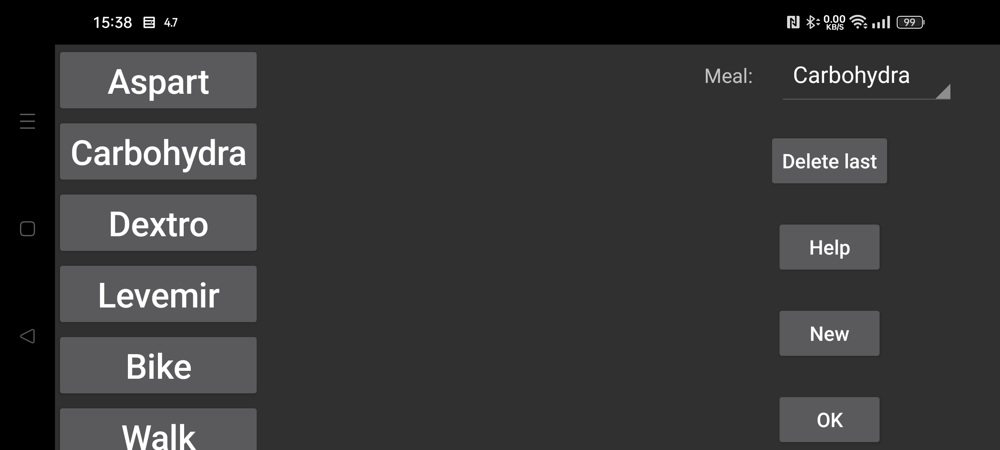

Здесь можно создавать, удалять и изменять метки для количеств, добавляемых на график: инсулина, углеводов или физической активности. Если какие-то записи уже сохранены, они получают метку по позиции. Поэтому если переименовать вторую позицию, уже сохраненные записи, которые раньше были введены под прежним названием во второй позиции, получат новое название.
Чтобы изменить метку, коснитесь ее.
После пункта Еда можно выбрать, какая метка обозначает содержание углеводов в приемах пищи. Для этой метки в пункте Новая запись левого среднего меню появляется кнопка Еда. С ее помощью можно задать прием пищи из ингредиентов. Сумма углеводов сохраняется под этой меткой, а позже этот прием пищи можно посмотреть, выбрав Еда у сохраненной записи.